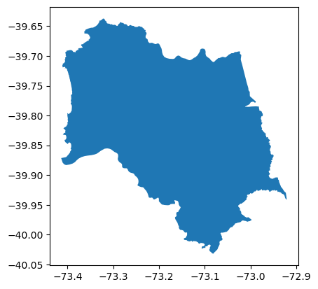

Code
import osmnx as ox
import matplotlib.pyplot as plt
print("osmnx version: ", ox.__version__)osmnx version: 1.9.2A first approach to playing with Sentinel images.
We will first load from OSMNx library the political boundaries of a target spot.
import osmnx as ox
import matplotlib.pyplot as plt
print("osmnx version: ", ox.__version__)osmnx version: 1.9.2city = 'Valdivia'
admin = ox.geocode_to_gdf(city)
admin.plot();
Let´s build a convex hull from the above polygon, so we can get a cleaner search area.
admin_polygon = admin.convex_hull.geometry.to_list()[0]
admin_polygon
We need satellite data to support any analysis on data. Here is a list for the top satellite maps in 2024: - Satellite maps sources
Sentinel images is a good option! There are six Sentinel missions, where three can be accessed through its API. Let´s check the description for each set of images:
Let´s use Sentinel-2 images! We can use the sentinelsat library and can download images after authentication.
import sentinelsat
print("sentinelsat version: ", sentinelsat.__version__)
from sentinelsat import SentinelAPI, read_geojson, geojson_to_wktsentinelsat version: 1.2.1 user = <add your user name>
password = < add your password >
api = SentinelAPI(user, password, 'https://apihub.copernicus.eu/apihub') You can query the API by specifying the polygon area, range of dates, which sentinel data and cloud coverage properties.
# location (based on a polygon)
# the time frame
# the space probe
# and the level of cloud-coverage accepted
products = api.query(admin_polygon,
date=('20150623', '20231006'),
platformname='Sentinel-2',
cloudcoverpercentage=(0, 100))
len(products)